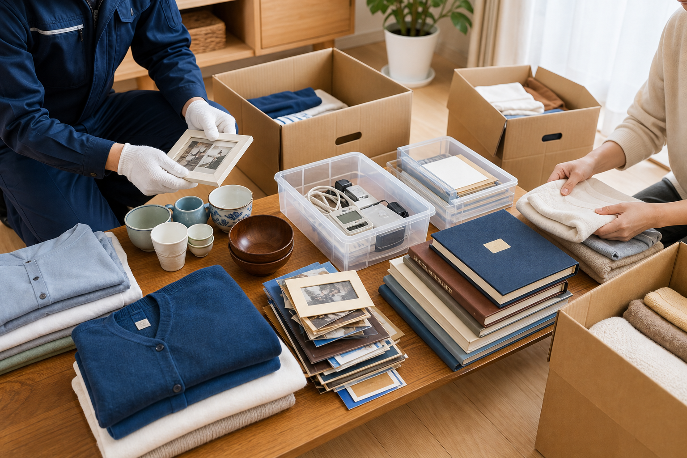
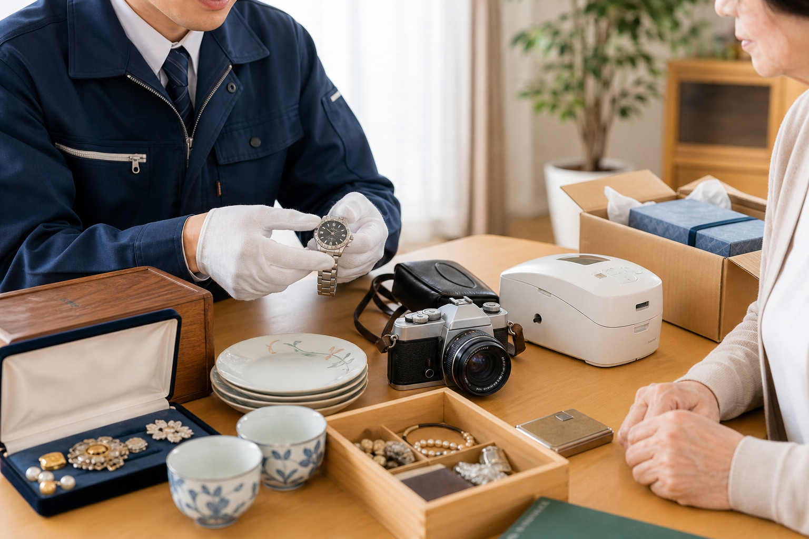
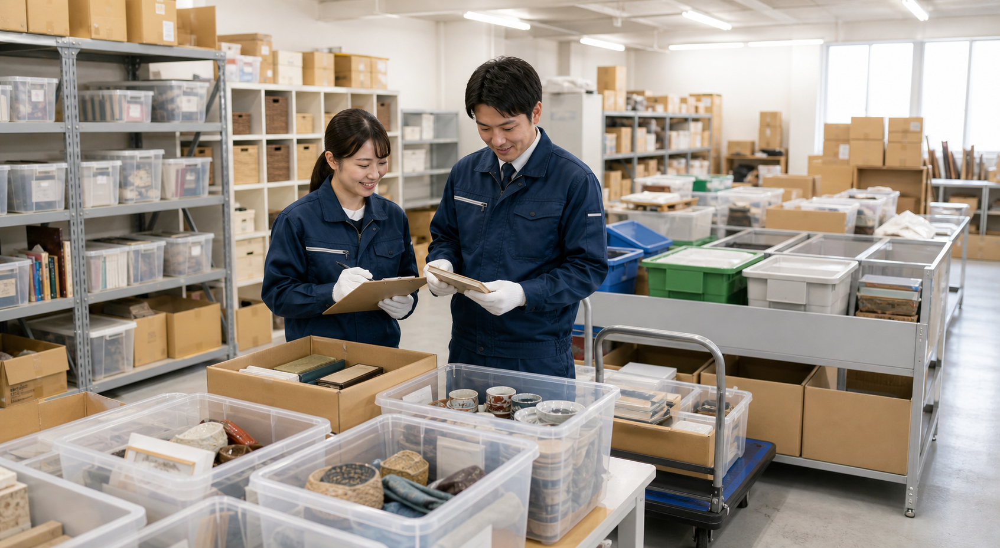

「まだ早いかも」と思っている方へ
元気なうちに、必要なものと手放すものを少しずつ整理。
ご本人の気持ちを確認しながら、仕分け・搬出・買取・リユースまでまとめて相談できます。
ご相談・お見積もりは無料です。まだ整理するか決めていない段階でも大丈夫です。少しずつ進められます。
生前整理は、家財を減らすことだけが目的ではありません。ご本人が元気なうちに、残したいもの、家族に引き継ぎたいもの、次に活かしたいものを確認しながら進められるのが大きな特徴です。実家片付けや遺品整理と違い、ご本人の意思を聞きながら進められるため、家族だけで判断する負担を減らしやすくなります。
まだ迷っている段階でも相談できます。少しずつ進められますので、まずは整理の進め方を相談するだけでも構いません。
「元気なうちに、自分のものは自分で決めておきたい」。そんなご相談が、都筑区でも年々増えています。
遺品整理と違い、生前整理はご本人に確認しながら進められます。「これは残したい」「これは誰かに使ってほしい」という気持ちを、その場で聞きながら仕分けできるのが一番の違いです。次のようなきっかけでご相談いただくことが多くあります。
ひとつでも当てはまったら、今の状況を話すだけで構いません。まずはご相談ください。
「全部を一度に」ではなく、必要なところから少しずつ。ご希望に合わせて組み合わせられます。
書類・貴重品・写真・衣類・家具の順に、必要なものと手放すものを一緒に分けます。
たんすやベッド、冷蔵庫など、ご自身では動かせないものの搬出・回収を行います。
状態のよい家具・家電・貴金属などは、買取やリユースにつなげられるか確認します。
押し入れだけ、物置だけなど、範囲を区切った整理から始めることもできます。
住み替えや空き家になる前など、家全体の家財整理にも対応します。
回収した品物は自社作業場で分別し、リサイクル・資源化まで自社で対応します。
入居日や引き渡しの期限が決まっている場合は、逆算してスケジュールを組み立てます。新しい住まいに持っていくものと実家に残すものを一緒に分け、残った家財の搬出までまとめて対応します。
退院後の住環境の変更など、急ぎのご事情があるときもまずはご相談ください。
いきなり全部を片付ける必要はありません。迷いにくい順番で、一緒に進めていきます。

手放すものも、ただなくすのではなく、次に活かせる形へつなげます。

状態のよい家具・家電・貴金属・カメラ・食器などは、仕分けの際にあわせて拝見し、買取やリユースにつなげられるかをご案内します。古物商許可を持つ会社として、査定から引き取りまで一貫して対応できます。
「売れるかどうか分からない」というものこそ、手放す前に一度お見せください。素材として活かせるものは資源化に回し、次に活かします。

現場で急がない、
約500坪の仕分け体制
回収した家財は都筑区池辺町の自社作業場に運び入れ、時間をかけて分別します。その場ですべてを判断しなくてよいので、ご本人・ご家族の負担を抑えられます。
自社作業場で仕分け・分別できるため、現場で長時間悩み続ける負担を抑えやすくなります。回収した品物をそのまま終わりにせず、再利用できるもの、資源として活かせるものを分けて、次に活かす形へつなげます。
間取りごとの目安です。物量や条件によって変わりますので、正式なお見積もりでご確認ください。
料金は、部屋の広さ、物量、搬出条件（階段の有無やエレベーターの大きさなど）、仕分け量、買取・リユースできる品の有無によって変わります。
現地またはLINEの写真で状況を確認し、作業内容と料金の内訳をご説明します。見積もり後に内容を確認してから判断できますので、その場で決めていただく必要はありません。ご家族と相談してからのお返事で大丈夫です。
「まず金額だけ知りたい」というご相談も歓迎です。
お部屋全体、家具、家電、押し入れや収納の中など、分かる範囲の写真をLINEで送っていただければ、概算の目安をご案内できます。正式な金額は、物量や搬出条件を確認したうえでお伝えします。
LINEで写真を送って概算を聞くお電話またはLINEでご連絡ください。LINEはお部屋の写真を送っていただくだけでも概算をご案内できます。
都筑区内へお伺いし、物量と搬出条件を確認して、作業内容と料金をご説明します。
ご本人の体調やご家族の予定、入居・住み替えの期限に合わせて作業日を決めます。
ご本人に確認しながら仕分けし、手放すと決めたものを丁寧に搬出・回収します。
買取できた品は精算し、回収した品物は自社作業場で分別してリユース・資源化へつなげます。
神奈川本社が都筑区池辺町にあるため、区内はすぐにお伺いできます。横浜市都筑区全域に対応しています。
急かさず、残すものから一緒に決めていきます。「まだ迷っている」ものは保留にして構いません。何度かに分けて進めることもできます。
回収した品物は約500坪の自社作業場で分別し、買取・リユース・リサイクル・資源化まで自社で対応。現場での作業時間を抑えやすい体制です。
本社が都筑区池辺町にあり、現地確認にもすぐ伺えます。遠方にお住まいのご家族とは、お電話・LINEで写真を共有しながら進められます。
親の施設入居が決まり、都筑区の実家を少しずつ整理したくて相談しました。何を残すか迷うものが多かったのですが、写真や書類、思い出の品を確認しながら進めてもらえたので、家族だけで抱え込まずに済みました。買取やリユースできるものも分けて説明してもらえたのがよかったです。
自分の荷物を元気なうちに整理しておきたいと思い、見積もりをお願いしました。急かされる感じがなく、必要なものと手放すものを一緒に確認してくれたので相談しやすかったです。大きな家具や家電の搬出も任せられ、部屋が使いやすくなりました。
まずは通帳や印鑑、保険証券などの書類からがおすすめです。次に貴重品、写真、衣類、家具の順に進めると迷いにくくなります。順番の組み立てからご相談いただけます。
ご相談いただけます。ご家族からのご相談も多く、お電話やLINEで写真をお送りいただければ概算のご案内が可能です。仕分けの際は、ご本人の意向を確認しながら進めます。
もちろんです。「話を聞いてから決めたい」という段階のご相談も歓迎です。お見積もり後に、ご家族と相談してからご判断いただけます。
可能です。状態のよい家具・家電・貴金属・カメラ・食器などがあれば、仕分けの際にあわせて拝見し、買取やリユースにつなげられるかをご案内します。
部屋の広さ、物量、搬出条件、仕分け量、買取・リユースできる品の有無で変わります。現地またはLINEの写真で確認し、内訳を説明したうえで正式なお見積もりをご案内します。
都筑区全域に対応しています。センター北・センター南・仲町台・北山田・川和町・池辺町など、区内どちらでもお伺いできます。
対応しています。入居日から逆算してスケジュールを組み、持っていくものと残すものの仕分けから搬出までまとめてお手伝いします。
すべて揃っていなくても問題ありません。分かる範囲で状況をお聞かせいただければ、進め方と費用の目安をご案内します。
まだ整理するか決めていない段階でも大丈夫です。お部屋の広さ、物量、搬出条件、残したいものを確認しながら、無理のない進め方をご提案します。